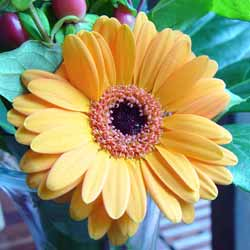

Gerbera
From Wikipedia, the free encyclopedia.
Gerbera is a genus of ornamental plants from the sunflower family (Asteraceae). It was named in honor of the German naturalist Traugott Gerber.

It has approximately 30 species in the wild, extending to South America, Africa and tropical Asia. The first scientific description of a Gerbera was made by J.D. Hooker in Curtis's Botanical Magazine in 1889 when he described Gerbera jamesonii, a South African species also known as Transvaal daisy or Barberton Daisy.
Gerbera species bear a large capitulum with striking, two-lipped ray florets in yellow, orange, white, pink or red colors. The capitulum, which has the appearance of a single flower, is actually composed of hundreds of individual flowers. The morphology of the flowers varies depending on their position in the capitulum. The flowers can be as small as 7 cm (Gerbera mini 'Harley') in diameter or up to 12 cm (Gerbera ‘Golden Serena’).
Gerbera is very popular and widely used as a decorative garden plant or as cut flowers. The domesticated cultivars are mostly a result of a cross between Gerbera jamesonii and another South African species Gerbera viridifolia. The cross is known as Gerbera hybrida. Thousands of cultivars exist. They vary greatly in shape and size. Colors include white, yellow, orange, red, and pink. The center of the flower is sometimes black. Often the same flower can have petals of several different colors.
Gerbera is also important commercially. It is the fifth most used cut flower in the world (after rose, carnation, chrysanthemum, and tulip. It is also used as a model organism in studying flower formation. Gerbera contains naturally occurring coumarin derivatives.